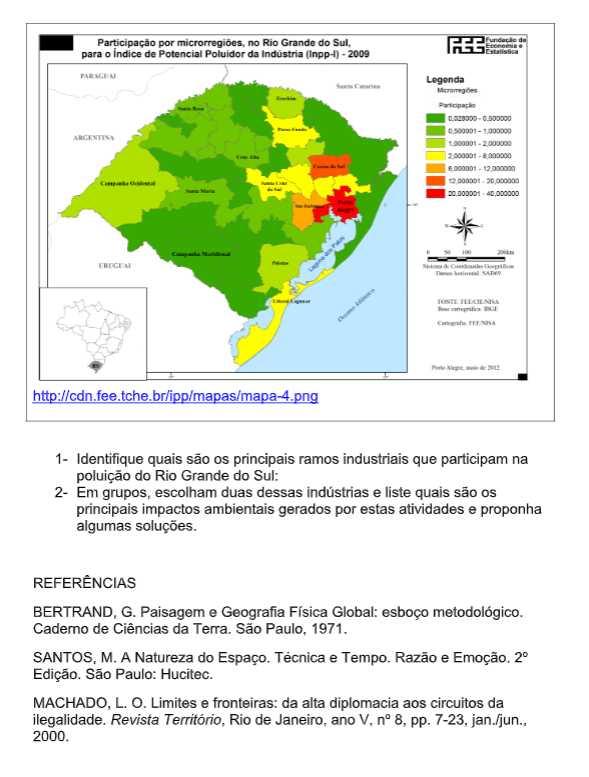

Capítulo 5: A Relação da sociedade com o Meio Ambiente e a busca da sustentabilidade
Questão:O que podemos fazer para tornar possível o desenvolvimento sustentável?
Contextualizando – Indústria Química e PreservaçãoA indústria química tem contribuído para a preservação do meio ambiente por meio da diminuição dos impactos ambientais e do aumento de eficiência em seus produtos e processos. No Brasil, as empresas associadas à Associação Brasileira da Indústria Química (Abiquim), adotam o Programa de Atuação Responsável® como código de ética industrial. Pelo programa, estão previstas avaliações ambientais constantes e a prática da melhoria contínua. “A indústria química tem investido em busca de eficiência ambiental em seus processos e produtos“, afirma Fernando Figueiredo, presidente-executivo da Abiquim. Os indicadores ambientais estão disponíveis em http://www.abiquim.org.br/atuacaoresponsavel/ .
A Geografia, de um modo geral, se dedica ao estudo dos aspectos espaciais da relação “sociedade x natureza”, de forma a analisar, planejar e transformar o espaço geográfico. Esta relação tem uma série de variáveis que a tornam muito complexa. Quando não há uma harmonia perfeita nesta relação, ou seja, há “conflitos” na interação do Homem com o meio em que vive, diz- se que há problemas ambientais. A nível local e/ou regional, existem inúmeros destes problemas, presentes inclusive no nosso cotidiano. Neste capítulo vamos conhecer alguns desses problemas ambientais e perceber nosso papel enquanto agente transformador da paisagem e consumidor de produtos.
O Efeito Estufa é assim chamado devido a sua semelhança com os efeitos de aquecimento próprios das estufas, cuja cobertura de vidro é transparente à luz solar, mas bloqueia a dissipação do calor ali formado. Da mesma forma, o Efeito Estufa é caracterizado pela manutenção do calor formado na Terra, que não consegue se dissipar em direção ao espaço. Isto acontece porque alguns gases presentes na atmosfera terrestre (os “gases-estufa”), como o gás carbônico (CO 2 ), o metano ( CH 4 ) e o oxido nitroso ( NO 2 ), reduzem a taxa de perda do calor terrestre para o espaço. Na verdade, o fenômeno nasce quando as radiações de energia solar, em ondas curtas ( raios ultravioletas) chegam ao planeta, fazendo-o aquecer. A energia resultante é devolvida em sentido vertical ( de baixo para cima ), mas como essas radiações não podem atravessar a atmosfera porque são ondas longas (radiação infravermelha), ficam presas abaixo do limite atmosférico, mantendo o calor terrestre na atmosfera.
Portanto, o Efeito Estufa é um fenômeno absolutamente natural, e sem ele não haveria vida na Terra. Entretanto, a emissão em larga escala dos gases-estufa (gerados principalmente pela queima de combustíveis fósseis gera uma intensificação do fenômeno, aumentando a temperatura média global e provocando variações climáticas. Esse fenômeno é conhecido como aquecimento global. Como consequências, haveriam, além da alteração de padrões agrícolas e de diversos processos ecológicos, alterações no ciclo hidrológico e derretimento das geleiras e plataformas de gelo, provocando o aumento no nível dos mares.
Para tentar diminuir a emissão dos gases-estufa, principalmente o CO 2 , foi assinado o Protocolo de Kyoto, onde vários países se comprometeram a reduzir as suas emissões em pelo menos 5% até 2008, mas, devido aos seus interesses econômicos, os países ricos e industrializados não estão cumprindo o acordo.
A poluição do meio hídrico está relacionada a ocorrência de fenômenos (adição de substâncias ou formas de energia modificando o meio) que direta ou indiretamente alteram a natureza de um corpo d’água de forma a prejudicar o seu uso. Quais seriam as principais formas de poluição da água? Os principais fenômenos poluidores da água são: - Contaminação: por matéria orgânica (esgotos e resíduos de indústrias alimentícias), por organismos patogênicos (bactérias transmissoras de doenças), por compostos organossintéticos (agrotóxicos) e por metais pesados (Hg, Pb, Cu, Zn, Ni, etc. – em altas concentrações são tóxicos). - Assoreamento: consiste no aporte de sedimentos num corpo d’água, diminuindo sua profundidade e seu volume útil, prejudicando diversos usos da água. - Eutrofização: superfertilização do ambiente aquático, o que implica em crescimento excessivo das plantas aquáticas, resultando numa influência negativa no balanço de O 2. - Acidificação: consiste no forte decréscimo do pH do meio, trazendo prejuízos para a biota aquática e para alguns usos da água. Geralmente tem origem na chuva ácida e derramamentos de navios carregados de ácido. - Alterações hidrológicas: retirada de água para fins de irrigação, reduzindo o volume e piorando a qualidade, devido à maior concentração. Ex.: Mar de Aral (ex-URSS).
A poluição do solo pode ocorrer em consequência da poluição da água e do ar. As principais formas de poluição do solo são as seguintes: - contaminação pelos resíduos de depósitos de lixo: o líquido gerado nos depósitos de lixo (chorume) e os resíduos tóxicos afeta diretamente o solo e as águas subterrâneas, podendo afetar os demais mananciais hídricos. Ocorre em áreas urbanas. - Contaminação pelo uso excessivo de agrotóxicos: os inseticidas e pesticidas usados nas lavouras acabam se impregnando no solo, pois não se desfazem com o tempo. Este tipo de poluição acontece em áreas rurais. A erosão dos solos é um outro grande problema para os produtores rurais, uma vez que, se o solo não for bem manejado, através de técnicas conservacionistas (terraços, etc.), há um grande potencial de perda dos solos (carregados pela erosão). Além disso, a lixiviação (quando os nutrientes do solo são levados pela água) também reduz a produtividade.
Poluição AtmosféricaComum nos grandes centros urbanos, a poluição do ar é provocada em 90% pelas atividades humanas (os outros 10% advém de fenômenos naturais, como erupções vulcânicas), sendo que a grande maioria é produzida como resultado da queima de combustíveis fósseis (carvão, petróleo e derivados).
Anualmente, milhares de toneladas de dióxido de carbono, dióxidos de enxofre, óxidos de nitrogênio, etc. são lançados no ar, causando prejuízos nos seres humanos (doenças respiratórias, câncer, etc.) e também nos ambientes naturais e construídos (destruição da biota, envelhecimento de construções, etc).
A poluição atmosférica tem seus efeitos intensificados quando há condições desfavoráveis de circulação do ar, como nas inversões térmicas, onde o ar poluído fica concentrado próximo à superfície, gerando domos de poluição. Nos EUA e na Europa (principalmente em Londres), há um fenômeno conhecido como “smog” (smoke + fog), que é um domo de poluição associado a um nevoeiro.
DesmatamentoA questão do desmatamento tem merecido muito destaque nos últimos anos, principalmente o realizado nas florestas tropicais, onde se encontra o mais alto grau de biodiversidade do planeta. O processo de destruição destas matas, embora historicamente seja muito antigo, vem se acelerando em progressão geométrica, devido ao uso de recursos tecnológicos poderosos (moto serra, etc.). Estimativas apontam que quase metade das florestas tropicais no mundo já foram eliminadas, sendo o Brasil um dos países campeões. Tendo como causas fundamentais a exploração madeireira e a expansão de áreas agrícolas e urbanas, o desmatamento tem diversas consequências, mas as principais são: - Diminuição do índice chuvas nas florestas: devido às alterações no processo de formação das chuvas e perturbações no ciclo hidrológico local. - Erosão das áreas desmatadas: sem a cobertura vegetal, o solo fica mais frágil e exposto à erosão, sendo levado para o leito dos rios, diminuindo a vazão dos mesmos e ocasionando o seu assoreamento. Um bom exemplo disto é a remoção da mata ciliar (situada nas margens) de diversos rios e arroios, que ocasiona a erosão e o consequente assoreamento, resultando em enchentes nos períodos de cheia e diminuição do volume de épocas de seca.
Desenvolvimento SustentávelDesenvolvimento sustentável significa obter crescimento econômico, social e ambiental, sem comprometer o desenvolvimento das gerações futuras. Portanto, para que ocorra o desenvolvimento sustentável é necessário que haja uma harmonização entre o desenvolvimento econômico, a preservação do meio ambiente, a justiça social (acesso a serviços públicos de qualidade), a qualidade de vida e o uso racional dos recursos da natureza (principalmente a água).
Respeito às leis trabalhistas.
Não utilização de mão-de-obra infantil e trabalho escravo.
Uso da Gestão Ambiental nas indústrias, empresas prestadoras de serviços e órgãos públicos.
Implantação, nos grandes centros urbanos, da técnica do telhado verde.
Ação e ReflexãoQuais das sugestões acima já fazem parte do seu dia-a-dia? Quais seriam possíveis incluir na sua rotina? Quais dependem de ações coletivas? Justifique suas respostas.
O que aprendi?Observe o mapa abaixo:
